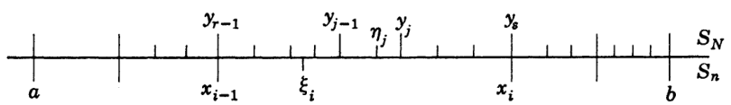

我们还须证明：只要 f(x) 在闭区间 [a,b] 上连续，它在积分限 a,b 之间（a<b）的积分便存在。证明主要依靠 f(x) 的一致连续性（见第 41 页）：任给正数 ϵ，区间中任意两点 ξ,η 只要足够接近，它们的函数值之差的绝对值就小于 ϵ。这里所需的接近程度只依赖于 ϵ，与 ξ,η 无关。换句话说，有一个一致的连续模 δ(ϵ)，使得 [a,b] 内任意两点 ξ,η，只要 ∣ξ−η∣<δ，就有 ∣f(ξ)−f(η)∣<ϵ。
按积分作为和的极限的定义，须依次取点 x0,x1,…,xn 把 [a,b] 分成 n 段，其中 x0=a, xn=b，且 x0<x1<⋯<xn。记 Sn 为把 [a,b] 分成 n 个小区间的某个这样的分割。用最长的小区间的长度，即各 Δxi=xi−xi−1 中的最大值，来度量一个分割的粗细；称它为 Sn 的“网格宽度”。由于 f 一致连续，只要 Sn 的网格宽度小于 δ=δ(ϵ)，同一个小区间内任意两点的函数值之差的绝对值就小于 ϵ。在各小区间 [xi−1,xi] 内选一个值 ξi，作
Fn=i=1∑nf(ξi)Δxi,就得到以 Sn 为分割的一个近似和。
须证明：对任一网格宽度趋于零的分割序列 Sn，和 Fn 都趋于某个极限，记为 ∫abf(x)dx，而且这个极限值与分割及中间点 ξi 的具体选择无关。
为证明这一点，先比较属于两个分割 Sn 和 SN 的和 Fn,FN。设 Sn 的网格宽度小于 δ，且 SN 是 Sn 的“加细”，即 Sn 的每个分点也是 SN 的分点。适当改变记号，有
FN=j=1∑Nf(ηj)Δyj,其中 yj 是 SN 的分点，Δyj=yj−yj−1，ηj 位于区间 [yj−1,yj] 内。Sn 的两个相继分点 xi−1,xi 也列在 yj 中，设 xi−1=yr−1, xi=ys。SN 把小区间 [xi−1,xi] 分为 [yr−1,yr],[yr,yr+1],…,[ys−1,ys]。这些区间对 FN 的贡献总共为 ∑j=rsf(ηj)(yj−yj−1)。相比之下，小区间 [xi−1,xi] 对 Fn 的贡献是 f(ξi)(xi−xi−1)，也可写为 ∑j=rsf(ξi)(yj−yj−1)（见图 2.33）。两种贡献的差的绝对值满足
j=r∑s[f(ηj)−f(ξi)](yj−yj−1)≤j=r∑sϵ(yj−yj−1)=ϵ(xi−xi−1).因此，把 Sn 所有小区间 [xi−1,xi] 对 Fn,FN 的贡献之差加起来，就得估计
∣FN−Fn∣≤i=1∑nϵ(xi−xi−1)=ϵ(b−a),其条件只是 Sn 的网格宽度小于 δ(ϵ)，SN 为 Sn 的加细。

图 2.33
现在取任意两个分割 Sn,Sm，把 Sn 的全部分点和 Sm 的全部分点合在一起，所得的分割 SN 就同时是 Sn 和 Sm 的加细。假设 Sn 和 Sm 的网格宽度都小于 δ(ϵ)。在 SN 的各小区间内任选中间点 ηj 来定义 FN，就有
∣Fn−Fm∣=∣(Fn−FN)+(FN−Fm)∣≤∣Fn−FN∣+∣Fm−FN∣≤2ϵ(b−a).可见，任意两个近似和，只要它们的分割网格宽度都充分小，彼此的差就任意小。
现取任一列分割 Sn，其网格宽度在 n→∞ 时趋于零。令 Fn 为相应的近似和。对任意 ϵ>0，只要 n 充分大，Sn 的网格宽度便小于 δ(ϵ)。因此 n,m 都充分大时，有 ∣Fn−Fm∣<2ϵ(b−a)。所以数列 Fn 满足柯西收敛准则（见第 97 页），从而 limn→∞Fn=F 存在。
还须证明，limn→∞Fn 的值不依赖于特定的分割和中间点。设 Sn′ 是另一列网格宽度趋于零的分割，则相应的和 Fn′ 也有一个极限 F′。只要 Sn 与 Sn′ 的网格宽度都小于 δ(ϵ)，就有 ∣Fn′−Fn∣<2ϵ(b−a)。令 n→∞，得到 ∣F−F′∣≤2ϵ(b−a)。因 ϵ 是任意的正数，必有 F=F′。因此我们记为 ∫abf(x)dx 的极限 F 是唯一确定的。至此，连续函数定积分的存在性证毕。
译者注 两个分割的分点可以完全错开，其近似和往往没法逐项相减。把两组分点合到一起以后，每个原区间都由若干更小的区间拼成，就能用同一个细分割分别与两边比较。这正是引进 SN 的原因。
更一般的近似和。 上面的证明更清楚地揭示了用和逼近积分时真正起作用的是什么。由此可见，还可构造稍广一些的极限过程，也得到同一积分。下面这个更一般的定理成立：为使和 Fn=∑fiΔxi 收敛到积分，fi 不一定本身就是函数值。只要在 [xi−1,xi] 中有某点 ξi 使 ∣fi−f(ξi)∣<δ(ϵ)，其中 ϵ→0 时 δ(ϵ)→0，就足够了。
这个一般说法常常有用。例如，若 f(x)=ϕ(x)ψ(x)，可以用更一般的和 ∑ϕ(ξν′)ψ(ξν′′)Δxν 代替 ∑f(ξν)Δxν，这里 ξν′,ξν′′ 是同一小区间内两个不必重合的点。当 n 增大，只要最长小区间的长度趋于零，这个和也趋于积分 ∫abf(x)dx=∫abϕ(x)ψ(x)dx。对类似构成的其他和，也有相应的说法。例如，
ν=1∑nϕ(ξν′)2+ψ(ξν′′)2Δxν⟶∫abϕ(x)2+ψ(x)2dx.为证明这些命题，只须证明把 ξν′ 换作 ξν′′ 所引起近似和的改变量 D 在极限中趋于零。第一例里这一点是显然的，此时改变量为
D=ν=1∑nϕ(ξν′)[ψ(ξν′′)−ψ(ξν′)]Δxν.因为 ϕ 有界而 ψ 一致连续，只要各小区间足够短，D 就可以任意小。第二个和的改变量是
D=ν=1∑n(ϕ(ξν′)2+ψ(ξν′′)2−ϕ(ξν′)2+ψ(ξν′)2)Δxν.对顶点为 (a,0),(0,b),(0,c) 的三角形用三角不等式，写成 ∣a2+b2−a2+c2∣≤∣b−c∣，就有
ϕ(ξν′)2+ψ(ξν′′)2−ϕ(ξν′)2+ψ(ξν′)2≤∣ψ(ξν′′)−ψ(ξν′)∣,由此立即推出 D 趋于零。